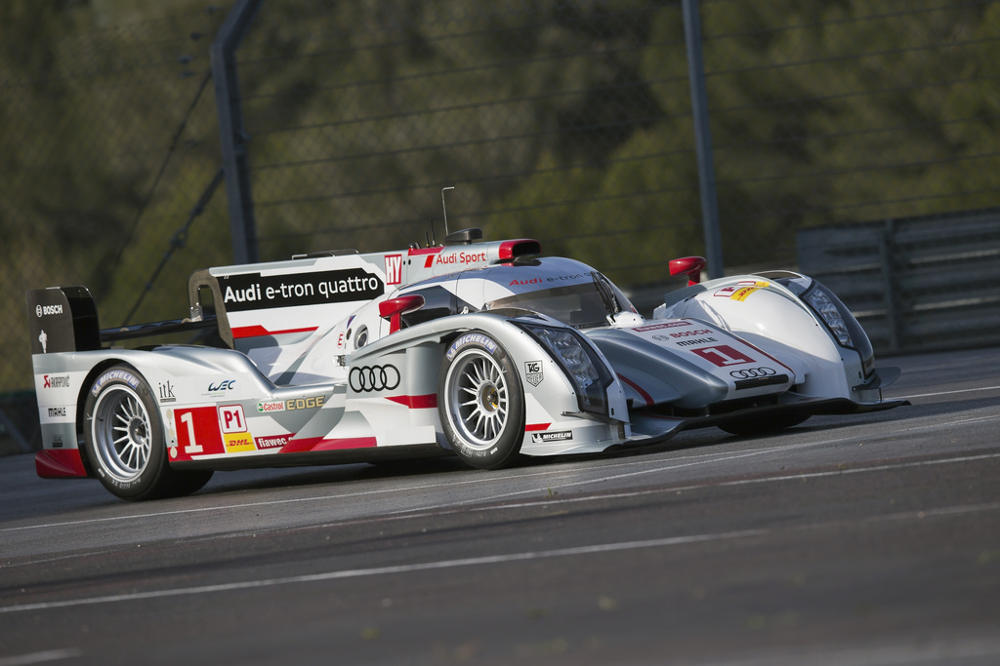
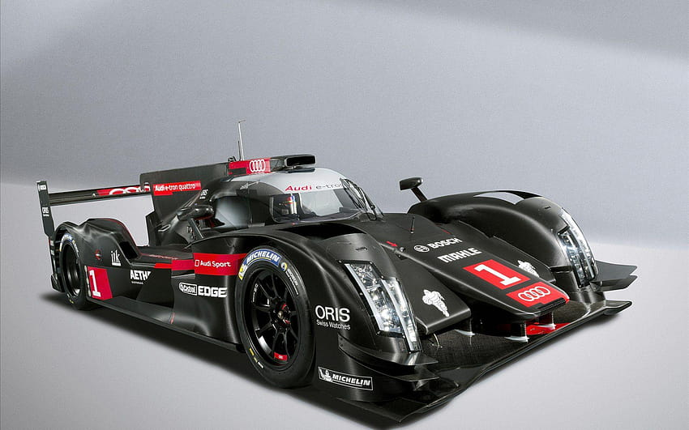
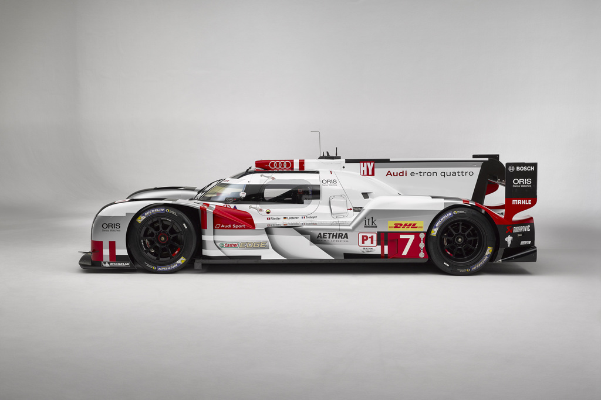

Audi R18 : SALAH SATU RAJA DIESEL BALAPAN KETAHANAN DUNIA (WEC)
Oleh Danishvara Ramardhi Adhi (11210251000104)


2011
 Model awal Audi R18 ini diluncurkan pada tahun 2011 dengan nama Audi R18 TDI,Mobil ini memiliki mesin berkapasitas 3.7 liter (3.700cc) V6 TDI (Turbo Direct Injection) yang memuntahkan tenaga kurang lebih sebesar 540 dk yang dikawinkan dengan transmisi Xtrac 6 percepatan sequential.Serta memiliki berat kurang lebih 900kg. Pada musim ini,Audi finis pada posisi kedua pada klasemen akhir dengan meraih 1 kemenangan.
Model awal Audi R18 ini diluncurkan pada tahun 2011 dengan nama Audi R18 TDI,Mobil ini memiliki mesin berkapasitas 3.7 liter (3.700cc) V6 TDI (Turbo Direct Injection) yang memuntahkan tenaga kurang lebih sebesar 540 dk yang dikawinkan dengan transmisi Xtrac 6 percepatan sequential.Serta memiliki berat kurang lebih 900kg. Pada musim ini,Audi finis pada posisi kedua pada klasemen akhir dengan meraih 1 kemenangan.
2012

 Pada musim ini,Audi R18 memiliki dua versi. Dimana Audi membuat Audi R18 non hybrid (Ultra) seperti musim sebelumnya dan juga versi hybrid (e-tron quattro). Untuk Audi R18 TDI Ultra,memiliki mesin 3.7 V6 TDI yang memiliki output yang lebih kecil dari versi TDI,yaitu 510 dk dan 850 nm serta tangki BBM yang lebih kecil dari versi TDI (65ltr vs 60ltr). Untuk transmisi,mobil ini masih sama seperti versi sebelumnya. Kemudian untuk versi Hybrid (e-tron quattro),
Untuk mesin dan transmisi masih sama seperti versi Ultra dan TDI. Tetapi perbedaannya adalah pada versi ini adalah adanya sistem KERS (Kinetic Energy Recovery System),sistem ini menggunakan rodagila (Flywheel) elektrik yang dapat menghasilkan 500kj (kilojoule). sistem ini akan bekerja ketika mobil menyentuh kecepatan 120km/h mengikuti regulasi kelas LMP1 waktu itu.Selain itu,Audi juga menyematkan tangki BBM yang lebih kecil untuk mengikuti regulasi waktu itu. Pada Musim ini,Audi sukses meraih titel juara dunia manufaktur dan pembalap dengan mengoleksi lima kemenangan.
Pada musim ini,Audi R18 memiliki dua versi. Dimana Audi membuat Audi R18 non hybrid (Ultra) seperti musim sebelumnya dan juga versi hybrid (e-tron quattro). Untuk Audi R18 TDI Ultra,memiliki mesin 3.7 V6 TDI yang memiliki output yang lebih kecil dari versi TDI,yaitu 510 dk dan 850 nm serta tangki BBM yang lebih kecil dari versi TDI (65ltr vs 60ltr). Untuk transmisi,mobil ini masih sama seperti versi sebelumnya. Kemudian untuk versi Hybrid (e-tron quattro),
Untuk mesin dan transmisi masih sama seperti versi Ultra dan TDI. Tetapi perbedaannya adalah pada versi ini adalah adanya sistem KERS (Kinetic Energy Recovery System),sistem ini menggunakan rodagila (Flywheel) elektrik yang dapat menghasilkan 500kj (kilojoule). sistem ini akan bekerja ketika mobil menyentuh kecepatan 120km/h mengikuti regulasi kelas LMP1 waktu itu.Selain itu,Audi juga menyematkan tangki BBM yang lebih kecil untuk mengikuti regulasi waktu itu. Pada Musim ini,Audi sukses meraih titel juara dunia manufaktur dan pembalap dengan mengoleksi lima kemenangan.
2013
 Pada musim ini,Audi melakukan pembaharuan yang cukup besar pada Audi R18 e-tron quattro pada bagian aerodinamika.Salah satunya adalah diterapkan fitur seperti Blown Diffuser, dimana pada fitur ini arah gas buang ini diarahkan ke diffuser mobil dengan tujuan agar dapat meningkatkan downforce. Kemudian,perubahan yang dilakukan oleh audi selanjutnya ialah dengan meningkatkan tenaga pada motor listriknya menjadi 218 dk dan tenaga mesin mobil ini berkurang sekitar 20 dk. Pada musim ini,Audi meraih gelar juara dunia manufaktur dan pembalap dengan mengoleksi tujuh kemenangan dari delapan jumlah seri balapan.2014
 Pada musim ini Audi melakukan perubahan yang tergolong besar pada mobil ini, Dimana mobil ini memiliki desain bagian depan yang benar - benar berbeda dari tahun-tahun sebelumnya.Selain itu, audi juga menyematkan teknologi lampu laser pada bagian depan mobil ini untuk meningkatkan pencahayaan pada malam hari. Untuk spesifikasi mobilnya,Audi mengganti dapur pacu pada mobil ini menjadi 4000cc (4.0 liter) V6 Turbodiesel (TDI) dengan tenaga sebesar 540dk dan torsi sekitar 813 Nm yang dikawinkan dengan transmisi 7 percepatan sequential serta juga memiliki sistem KERS (Kinetic Energy Recovery System) yang dapat menghasilkan tenaga sebesar 228 hp. Kemudian untuk mengikuti regulasi pada tahun ini,mobil ini lebih tinggi 20mm dari versi sebelumnya dan memiliki tapak ban yang lebih kecil 100mm dari versi sebelumnya.Serta pada musim ini tangki BBM diperkecil menjadi 54,2 liter untuk mengurangi keuntungan efisiensi bahan bakar pada mobil ini, sehingga persaingan dengan kompetitor lebih seimbang.2015
 Pada musim ini,Audi merubah lagi pada bentuk mobil ini,dimana sekarang menjadi sedikit lebih membulat.Untuk spesifikasinya,audi merubah pada bagian sistem hybridnya dimana sekarang jumlah energinya bertambah dari 2MJ (MegaJoule) ke 4MJ (MegaJoule) dan menghasilkan tenaga sebesar 272dk serta tenaga mesin 4.0 V6 TDI tersebut pun ditingkatkan menjadi 558dk. Kemudian,meskipun mobil ini memiliki sejumlah perubahan tersebut. mobil ini memiliki bobot yang sama seperti mobil musim lalu yaitu 870kg.Pada musim ini,Audi finis pada posisi kedua di klasemen manufaktur dengan mengoleksi dua kemenangan.2016
 Pada musim ini,Audi menyematkan sejumlah perubahan pada mobil ini. Dimana,mobil ini sekarang memiliki jumlah energi pada sistem hybridnya sebesar 6MJ (MegaJoule). Sistem hybrid tersebut kini dapat menghasilkan tenaga lebih dari 400 dk. Akan tetapi,untuk tenaga mesin kini "hanya" menghasilkan tenaga 514dk. Kemudian,perubahan selanjutnya adalah pengurangan kapasitas tangki BBM menjadi 49,9 liter, bobot mobil yang bertambah menjadi 875kg,kembalinya transmisi 6 percepatan sequential,serta penghilangan nama "e-tron quattro" pada mobil ini. Dengan mobil ini,Audi dapat meraih posisi kedua pada klasemen manufaktur dan memenangi dua balapan yang menjadi kemenangannya terakhir Di WEC (World Endurance Championship) Sampai saat ini dikarenakan ini merupakan musim terakhir mereka di WEC (World Endurance Championship).
Adapun alasan mengapa Audi harus menghentikan perjalanannya di WEC (World Endurance Championship) adalah karena skandal Dieselgate yang dilakukan oleh pabrikan - pabrikan dibawah naungan Volkswagen Group (VW Group),termasuk juga Audi. Sehingga mereka mengalami kerugian yang banyak dan biaya untuk program LMP1 ini sebesar 200-300 juta dollar Amerika. Selain itu,penyebab selanjutnya adalah mereka ingin fokus untuk mengembangkan tim Formula-E mereka untuk musim selanjutnya (2017.)
Pada musim ini,Audi menyematkan sejumlah perubahan pada mobil ini. Dimana,mobil ini sekarang memiliki jumlah energi pada sistem hybridnya sebesar 6MJ (MegaJoule). Sistem hybrid tersebut kini dapat menghasilkan tenaga lebih dari 400 dk. Akan tetapi,untuk tenaga mesin kini "hanya" menghasilkan tenaga 514dk. Kemudian,perubahan selanjutnya adalah pengurangan kapasitas tangki BBM menjadi 49,9 liter, bobot mobil yang bertambah menjadi 875kg,kembalinya transmisi 6 percepatan sequential,serta penghilangan nama "e-tron quattro" pada mobil ini. Dengan mobil ini,Audi dapat meraih posisi kedua pada klasemen manufaktur dan memenangi dua balapan yang menjadi kemenangannya terakhir Di WEC (World Endurance Championship) Sampai saat ini dikarenakan ini merupakan musim terakhir mereka di WEC (World Endurance Championship).
Adapun alasan mengapa Audi harus menghentikan perjalanannya di WEC (World Endurance Championship) adalah karena skandal Dieselgate yang dilakukan oleh pabrikan - pabrikan dibawah naungan Volkswagen Group (VW Group),termasuk juga Audi. Sehingga mereka mengalami kerugian yang banyak dan biaya untuk program LMP1 ini sebesar 200-300 juta dollar Amerika. Selain itu,penyebab selanjutnya adalah mereka ingin fokus untuk mengembangkan tim Formula-E mereka untuk musim selanjutnya (2017.)
Spesifikasi Mobil
Mesin&Transmisi
Mesin yang digunakan adalah mesin diesel 3.7 liter (3700cc) dan 4.0 liter (4000cc).Keduanya sama - sama V6 TDI.
Kemudian,output yang dihasilkan kisaran 510dk - 558 dk dan torsi >800nm. Kedua mesin tersebut diletakkan diposisi belakang pembalap.
Transmisi yang digunakan adalah Xtrac 6 percepatan sequential dengan Limited-Slip Differential (2011-2013,2016)
dan 7 Speed sequential dengan Limited-Slip Differential (2014-2015)
Bobot
900kg (TDI dan Ultra),915kg(2012-2013 e-tron quattro),870kg(2014-2015 e-tron quattro) dan 875kg(2016)
Kapasitas Tangki Bahan Bakar
60 liter (TDI dan Ultra),58 liter (2012-2013 e-tron quattro),54.2 liter (2014-2015 e-tron quattro),dan 49.9 liter (2016).
Sistem Hybrid (KERS)
Menggunakkan akumulator elektrik pada rodagila dan menggunakkan baterai lithium-ion. sistem ini dapat menghasilkan tenaga 2x107dk untuk versi 2012-2013.
170kw (228dk) untuk versi 2014.>200kw (272dk) untuk versi 2015. 300kw/402dk (untuk Le Mans) dan >350kw/470dk untuk versi 2016.
Penggerak
Penggerak roda belakang dan kontrol traksi (ASR) (TDI dan Ultra)
Penggerak semua roda dan kontrol traksi. Di versi ini,mesin menggerakan kedua roda belakang+sistem hybrid menggerakan kedua roda depan.
Dimensi (PxLxT)
4,650mm x 2,000mm x 1,030mm (TDI,Ultra,2012-2013 e-tron quattro).
4,650mm x 1,900mm x 1,050mm (e-tron quattro 2014-2015,2016)
info selengkapnya, klik disini
info selengkapnya, klik disini!
info selengkapnya, klik disini
info selengkapnya, klik disini
info selengkapnya, klik disini!
info selengkapnya,klik disini
info selengkapnya,klik disini
info selengkapnya,klik disini
info selengkapnya,klik disini
info selengkapnya,klik disini
info selengkapnya,klik disini
info selengkapnya,klik disini
info selengkapnya,klik disini